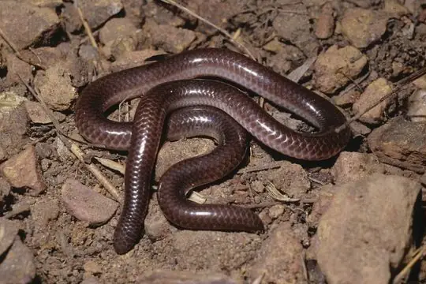
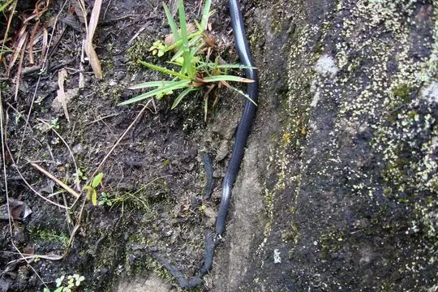
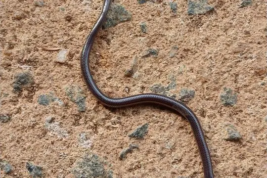
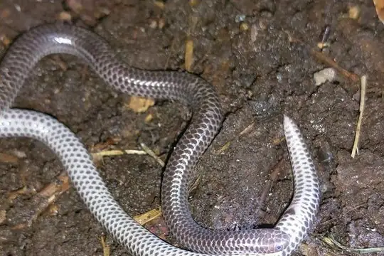
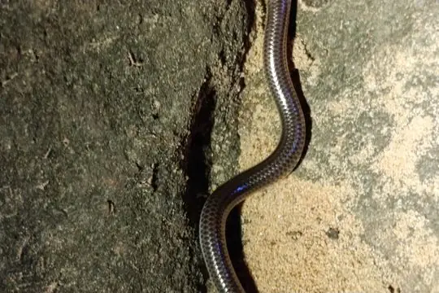
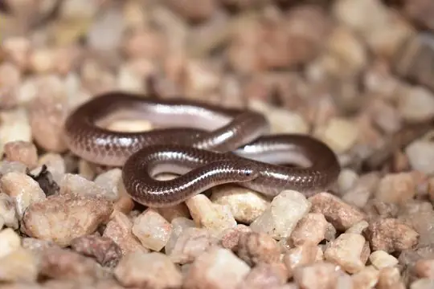

Trilepida
The genus Trilepida (family Leptotyphlopidae) has 14 living species in SnakeList (none venomous), recorded in 7 countries (+1 territory).
- 14living species
- 14non-venomous
- 7countries
About the genus
A genus of the family Leptotyphlopidae (thread snakes).
Species
Showing 14 species

Amaral's Blind SnakeTrilepida koppesi
Bailey's Blind SnakeTrilepida anthracina Big-scaled Blind SnakeTrilepida macrolepis
Big-scaled Blind SnakeTrilepida macrolepis- No photo yetBrazilian Blind SnakeTrilepida brasiliensis
 Caqueta Blind SnakeTrilepida brevissima
Caqueta Blind SnakeTrilepida brevissima Dainty Blind SnakeTrilepida dimidiata
Dainty Blind SnakeTrilepida dimidiata- No photo yetDugand's Blind SnakeTrilepida dugandi

Espiritú Santo Blind SnakeTrilepida salgueiroi Joshua's Blind SnakeTrilepida joshuai
Joshua's Blind SnakeTrilepida joshuai
Pastuso ThreadsnakeTrilepida pastusa- No photo yetSantander Blind SnakeTrilepida nicefori
- No photo yetVenezuela Blind SnakeTrilepida affinis

Trilepida fuliginosa
Trilepida jani
No snakes in Trilepida match.
About the genus Trilepida
- Distribution: living species recorded in 7 countries (+1 territory), on 2 continents: North America, South America.
- Family: Leptotyphlopidae.
- Countries and territories: Brazil, Colombia, Ecuador, French Guiana, Guyana, Panama, Suriname, Venezuela.
Compare its species
Its living species side by side. Lengths come only from SnakeList’s reviewed, sourced accounts; the others are left blank rather than guessed.
| Species | Venom | Recorded in | Adult length (reviewed accounts) |
|---|---|---|---|
| Amaral's Blind Snake Trilepida koppesi | Non-venomous | 1 country (South America) | No reviewed account yet |
| Bailey's Blind Snake Trilepida anthracina | Non-venomous | 1 country (South America) | No reviewed account yet |
| Big-scaled Blind Snake Trilepida macrolepis | Non-venomous | 7 countries (+1 territory) (North America, South America) | No reviewed account yet |
| Brazilian Blind Snake Trilepida brasiliensis | Non-venomous | 1 country (South America) | No reviewed account yet |
| Caqueta Blind Snake Trilepida brevissima | Non-venomous | 1 country (South America) | No reviewed account yet |
| Dainty Blind Snake Trilepida dimidiata | Non-venomous | 4 countries (+1 territory) (South America) | No reviewed account yet |
| Dugand's Blind Snake Trilepida dugandi | Non-venomous | 1 country (South America) | No reviewed account yet |
| Espiritú Santo Blind Snake Trilepida salgueiroi | Non-venomous | 1 country (South America) | No reviewed account yet |
| Joshua's Blind Snake Trilepida joshuai | Non-venomous | 1 country (South America) | No reviewed account yet |
| Pastuso Threadsnake Trilepida pastusa | Non-venomous | 1 country (South America) | No reviewed account yet |
| Santander Blind Snake Trilepida nicefori | Non-venomous | 1 country (South America) | No reviewed account yet |
| Venezuela Blind Snake Trilepida affinis | Non-venomous | 1 country (South America) | No reviewed account yet |
| Trilepida fuliginosa | Non-venomous | 1 country (South America) | No reviewed account yet |
| Trilepida jani | Non-venomous | 1 country (South America) | No reviewed account yet |